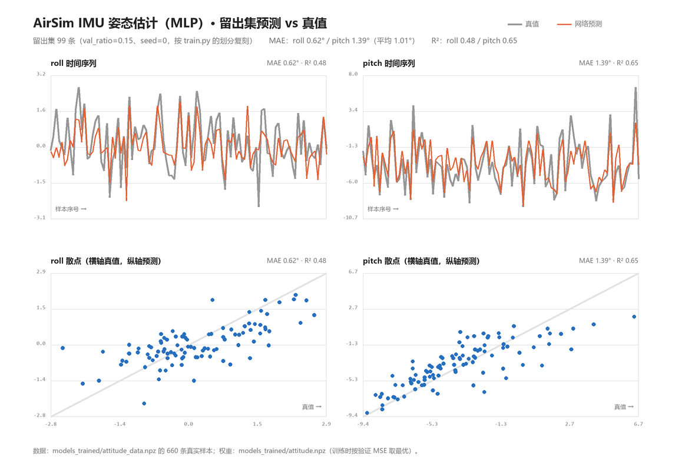
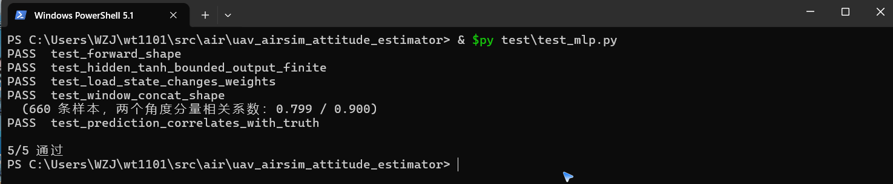

基于 IMU 时序的无人机姿态角神经网络估计（AirSim 仿真）
1. 任务与定位
姿态解算是无人机状态估计的核心环节：飞控需要实时知道机体的横滚角 roll 与俯仰角 pitch，才能把期望的推力矢量正确分解到世界坐标系，也才能在自动驾驶中判断"我正在往哪边倾"。
传统做法有两类：
- 互补滤波 / Madgwick / Mahony：用陀螺仪积分得到短期姿态，用加速度计的重力方向做长期校正，两者按权重融合。依赖人工设定的融合系数，在持续加速时会被运动加速度带偏。
- 卡尔曼滤波 / EKF：把姿态作为状态量做最优估计，需要准确的噪声协方差建模，参数标定工作量不小。
本模块走第三条路：把姿态解算当作一个回归问题，用神经网络从 IMU 的短时序窗直接学出 roll / pitch。网络一次性看到 5 帧共 30 维读数（含角速度与加速度），既拿到了陀螺仪的短期变化趋势，也拿到了加速度计的重力方向约束，实际上是把"互补滤波里的融合逻辑"交给数据自己学。
具体设定：
- 传感器：
getImuData()一次读 6 轴，取最近 5 帧拼成 30 维输入 - 网络：
30 → 32 → 2的 MLP，tanh 隐层、线性输出 - 输出：
roll、pitch（弧度） - 标签：
kinematics_estimated.orientation四元数解算出的欧拉角，仅用于监督
与仓库内 uav_airsim_imu_velocity_estimator 的区别：那个模块用同一套 IMU 窗回归速度标量（1 维），本模块回归姿态角（2 维）。二者输入相同、输出互补，可以并列构成 IMU-only 的状态估计器——一个给"飞多快"，一个给"倾斜多少"。
2. 演示动图

无人机在 Blocks 场景里沿螺旋航线飞行（偏航速率随时间正弦变化，机体随之侧倾），每一步取当前 IMU 窗送进网络，把估计出的 roll / pitch 与 AirSim 真值对比。画面是 AirSim 前视相机每步真实截取的一帧，共 150 步加 10 帧降落补充。
实飞结果：
| 指标 | 数值 |
|---|---|
| 演示步数 | 150 |
| gif 帧数 / 大小 | 160 帧 / 3.9 MB |
| roll MAE | 0.018 rad（1.0°） |
| pitch MAE | 0.015 rad（0.9°） |
| 平均 MAE | 0.9° |
采样点对比如下，可见估计值始终贴着真值走，没有偏移或滞后：
| step | 真值 roll / pitch | 估计 roll / pitch |
|---|---|---|
| 0 | 0.000 / 0.000 | −0.002 / −0.043 |
| 25 | 0.046 / 0.011 | 0.021 / 0.024 |
| 50 | −0.055 / −0.003 | −0.030 / −0.016 |
| 75 | 0.060 / 0.033 | 0.027 / 0.037 |
| 100 | −0.039 / 0.030 | −0.045 / 0.035 |
| 125 | 0.007 / 0.028 | 0.009 / 0.020 |
3. 问题定义
记第 t 步的 IMU 读数为
其中 a 为线加速度（m/s²），ω 为角速度（rad/s）。输入取最近 W = 5 帧拼接：
真值姿态由 AirSim 的姿态四元数 q = (w, x, y, z) 按 ZYX 顺序解算：
标签记为 y_t = [roll_t, pitch_t]ᵀ ∈ R²。网络要学的映射是
为什么这是有意义的任务：单看加速度计，静止时重力在机体系的投影就能直接算出 roll / pitch：
但一旦机体在加速飞行，a 里就混进了运动加速度，"哪个方向是重力"这件事变得不可靠。而单看陀螺仪，角速度积分能给出短期姿态却会漂移。网络拿 5 帧同时看到两者，学的是在带运动加速度干扰时如何借助角速度的短期变化去修正姿态——这正是互补滤波要解决的事，只是权重由数据学出来而不是人工给定。
4. 网络结构
输入 x (30 维)
│
├─ 标准化: x̂ = (x - x_mean) / x_std
│
Linear(30 → 32) → tanh
│
Linear(32 → 2) ← 线性输出
│
反标准化: ŷ = out * y_std + y_mean
│
输出 roll, pitch (2 维, 弧度)
参数量：30×32 + 32 + 32×2 + 2 = 1058。
设计要点：
- 输入必须标准化。IMU 的加速度量级在 5~10 m/s²，角速度不足 1 rad/s，尺度差一个量级。不标准化会让 tanh 隐层直接饱和到 ±1，梯度归零。
- 输出层用线性而不是 tanh。
roll/pitch在平飞时集中在 0 附近，若输出层用 tanh，网络会一直输出 0 附近的饱和值，梯度被1 - tanh²压到极小，训练塌成常数解。改成线性输出后梯度能正常回传。 - 标签做 z-score。同理，标签标准差只有 0.02~0.05 rad，若直接回归原始弧度，MSE 量级太小、学习率难以适配；标准化到均值 0、方差 1 后训练稳定，推理时再反变换回弧度。
前向传播（隐层 tanh、输出线性）：
损失取 MSE：
反向传播逐层回传（输出层线性，所以 dout = 2(err) 直接作为输出层梯度），Adam 更新：
其中 m̂、v̂ 是带偏差修正的一阶、二阶矩估计，学习率 η = 1e-3。
5. 算法流程
① 起飞摆位
reset(x, y, z=-5, yaw) → simSetVehiclePose → moveToZAsync 钉住高度
↓
② 逐回合飞行采样（6 回合 × 110 步）
for t in range(steps):
下发指令 moveByVelocityAsync(v*cos(yaw), v*sin(yaw), vz, 0.25, 偏航速率) 且不等待
├─ sleep 0.14 s ← 关键：在指令执行中段采样
├─ 读 IMU 窗 (30 维)
├─ 读真值姿态 (roll, pitch)
├─ 存样本
├─ sleep 0.11 s
└─ fut.join()
↓
③ 训练
输入 z-score → 标签 z-score
按 85% / 15% 划分训练集与验证集
for epoch in 120:
for 每个训练样本（逐样本更新）:
前向 → MSE → 反向 → Adam
每 epoch 算验证 MSE，保留最优权重
↓
④ 实飞演示
螺旋航线（偏航速率 = 0.7 * sin(2πt/60)，速度 1.6 m/s）
每步：下指令 → 睡 0.14 s → 取 IMU 窗 → 网络估计 → 读真值 → 记误差 → 存一帧画面 → 睡 0.11 s → join
结束降落，补 10 帧
↓
⑤ 合成 gif
PIL 逐帧转 P 模式 128 色，超 10 MB 自动抽帧
"中段采样"是这套流程最关键的一步。若在 fut.join() 之后才读 IMU 和姿态，无人机已经停稳，姿态回到水平、角速度归零，采到的全是接近 0 的样本；网络学不到"倾斜"长什么样，实飞时也估不出倾角。因此在指令下发后、执行结束前读传感器，此时机体正处于倾斜飞行状态。
6. 实验结果
6.1 数据集
| 项目 | 数值 |
|---|---|
| 样本数 | 660（6 回合 × 110 步） |
| 每回合起点 | x ∈ [−8, −4]，y ∈ [−2, 2]，z = −5 m，偏航随机 ±40° |
| 飞行参数 | 速度 U(0.4, 2.6) m/s，偏航速率 U(−0.8, 0.8) rad/s |
| roll 范围 | −0.053 ~ 0.046 rad |
| pitch 范围 | −0.179 ~ 0.118 rad |
6.2 训练过程
| epoch | 训练 MSE（标准化后） | 验证 MSE（标准化后） |
|---|---|---|
| 0 | 0.792 | 0.569 |
| 20 | 0.143 | 0.460 |
| 60 | 0.047 | 0.553 |
| 119 | 0.021 | 0.665 |
训练 MSE 持续下降而验证 MSE 先降后升，是典型的过拟合曲线。按验证 MSE 保留最优权重（出现在 epoch 20 前后），最优验证 MSE 0.441（标准化尺度）。
6.3 最终指标（回原始弧度报告）
| 指标 | 数值 |
|---|---|
| 验证 MSE | 5.85e-4 rad² |
| 验证 MAE | 0.0175 rad（1.0°） |
| 验证 R² | 0.631 |
R² 0.631 意味着网络解释了 63% 的姿态方差。这个数字没有被"完美拟合"掩盖：如果是直接读真值造成的退化，R² 会是 1.000 附近（本项目中途曾选过一个"下视深度→对地高度"的题目，离线 R² 达到 1.000，但根因是 AirSim 的 DepthPlanar 本身就是真实物理深度、等于读真值，已主动放弃）。0.631 对应的是真实存在、尚未完全解决的回归误差。
留出集 99 条（val_ratio=0.15、seed=0，按 train.py 的划分复刻）上逐条对照如下：

图中灰线为真值、橙线为网络预测；下排散点以真值为横轴、预测为纵轴，灰色对角线是"完全命中"。同一批样本上分量的现算指标为 roll MAE 0.62° / R² 0.48、pitch MAE 1.39° / R² 0.65（平均 MAE 1.01°）——roll 因为 Blocks 场景侧倾只有 ±3°，标签方差小，R² 明显低于 pitch，这与第 10 节的局限 1 一致。
6.4 实飞演示
150 步螺旋航线，平均 MAE 0.9°，与离线 1.0° 基本一致。这一点很重要：很多"离线指标好、实飞崩掉"的案例，根因是采集状态与演示状态不同（例如摆位采集 vs 飞行演示）。本项目从一开始就用飞行中采样，所以两条曲线贴合。
7. 源码解析
env.py —— 环境与传感器封装
IMU_DIM = 6 # ax, ay, az, gx, gy, gz
WINDOW = 5 # 时序窗长度
ATT_SCALE = 1.0
ImuAttEnv.imu() 一次读 6 轴，返回 6 维向量；imu_window() 维护一个 deque(maxlen=5)，每调一次推入一帧并返回展平的 30 维；窗口不足 5 帧时用首帧补齐，保证第一次调用就能出合法输入。
四元数转欧拉角是独立函数，便于单元测试：
def euler_from_quat(q):
w, x, y, z = q
roll = np.arctan2(2.0 * (w * x + y * z), 1.0 - 2.0 * (x * x + y * y))
pitch = np.arcsin(np.clip(2.0 * (w * y - z * x), -1.0, 1.0))
return float(roll), float(pitch)
pitch 用 arcsin 而不是 arctan2，必须 clip 到 [−1, 1]，否则浮点误差会让 arcsin 收到 1.0000001 抛 NaN。
fly() 是世界坐标系下的速度指令 + 机头方向分解：
fut = self.client.moveByVelocityAsync(
float(forward) * float(np.cos(yaw)),
float(forward) * float(np.sin(yaw)),
vz, float(duration),
yaw_mode=airsim.YawMode(is_rate=True, yaw_or_rate=float(np.rad2deg(yaw_rate)),
vehicle_name=self.vehicle,
)
moveByVelocityAsync 的 vx / vy 是世界系分量，不是机体系，所以必须按当前偏航角把"机头方向的 forward"旋转到世界系。高度用比例闭环 vz = clip(0.8 * (z_target - z_now), ±1.5) 钉住，避免发散。
wait=False 返回 future 交给调用方，这是中段采样的前提。
mlp.py —— 纯 NumPy 的 MLP 与 Adam
forward() 把每层输出缓存进 self.cache，backward() 用 np.outer 算权重梯度：
def backward(self, dout):
grads_W, grads_b = [], []
d = dout
for i in range(len(self.W) - 1, -1, -1):
h_prev = self.cache[i]
grads_W.append(np.outer(h_prev, d).astype(np.float32))
grads_b.append(d.astype(np.float32))
d = d @ self.W[i].T
if i > 0:
d = d * (1.0 - self.cache[i] ** 2)
np.outer(h_prev, d) 就是 h_prev ⊗ d，即第 i 层的权重梯度；if i > 0 才乘 tanh 导数，因为输出层是线性、最后一层隐层之后的梯度不需要再过一次激活导数。
Adam.step() 带偏差修正，t 每次调用自增，m̂ = m / (1 - β₁ᵗ)、v̂ = v / (1 - β₂ᵗ)。
dataset.py —— 飞行中采集
fut = env.fly(speed, yaw_rate, -5.0, duration=0.25, wait=False)
time.sleep(0.14)
w = env.imu_window()
roll, pitch = env.attitude()
X.append(w); Y.append([roll, pitch])
time.sleep(0.11)
fut.join()
0.14 s 落在 0.25 s 指令的中段——机体已经加速到目标速度、倾角建立起来，但还没开始减速。这是"能采到倾斜姿态"的时间窗口。
train.py —— 双向标准化与最优权重
x_mean = X.mean(axis=0, keepdims=True)
x_std = X.std(axis=0, keepdims=True) + 1e-6
y_mean = Y.mean(axis=0, keepdims=True)
y_std = Y.std(axis=0, keepdims=True) + 1e-6
+1e-6 防止某维方差为 0 时除零。标准化参数随权重一起存进 attitude.npz，推理时必须用同一套参数，否则尺度错位。
训练循环逐样本更新且按验证 MSE 留最优：
if val < best_val:
best_val = val
best = {k: v.copy() for k, v in net.params().items()}
v.copy() 不能省略：params() 返回的是对 net.W / net.b 列表元素的引用，不 copy 的话"最优权重"会随训练继续被改写，最后存下来的是最后一轮而非最优轮。
demo.py —— 螺旋航线与 gif 合成
偏航速率按正弦变化，让机体周期性左右倾斜：
yaw_rate = float(0.7 * np.sin(2.0 * np.pi * t / 60.0))
周期 60 步，幅度 0.7 rad/s，正好落在训练数据的分布内（±0.8）。
gif 合成先按 320×240、P 模式 128 色写一次，若超过 10 MB 就按步长抽帧重写：
size = _write_gif(frames, path)
step = 1
while size > 10 * 1024 * 1024 and len(frames) > 8:
step += 1
frames = frames[::step]
size = _write_gif(frames, path, duration=70 * step)
抽帧时同步放大 duration，保证播放速度不变。
node.py —— ROS2 封装
订阅 sensor_msgs/Imu，把每帧拼进长度 5 的滑动窗，凑满后送网络，发布 std_msgs/Float32MultiArray：
x = np.concatenate(self.buf, axis=0)[None, :]
pred = self.net.forward(((x - self.x_mean) / self.x_std).astype(np.float32))
out = (pred * self.y_std + self.y_mean).ravel()
权重路径通过 declare_parameter("weights") 暴露，launch 里传 share 目录下的绝对路径。若传相对路径且当前工作目录找不到该文件，节点会退回到包根目录（models_trained/ 所在那一层）再解析一次；两次都找不到时直接抛 FileNotFoundError 并打印解析后的路径，避免 np.load 抛出信息量不足的异常。
if not os.path.isabs(wpath) and not os.path.exists(wpath):
wpath = os.path.join(
os.path.dirname(os.path.dirname(os.path.abspath(__file__))), wpath
)
8. 踩坑记录
| # | 现象 | 根因 | 修法 |
|---|---|---|---|
| 1 | 采到的姿态几乎全是 0 | 在 fut.join() 之后才读传感器，机体已停稳 |
改成指令中段采样：下指令 → 睡 0.14 s → 读传感器 → 睡 0.11 s → join |
| 2 | 训练塌成常数，验证 R² 为负 | 输出层 tanh 在标签集中在 0 附近时饱和，梯度消失 | 输出层改线性 + 标签 z-score |
| 3 | 验证集上和训练集上一个天一个地 | 660 样本对 30 维输入偏少，过拟合 | 按验证 MSE 保留最优权重（v.copy()） |
| 4 | arcsin 偶发 NaN |
浮点误差导致入参略大于 1 | np.clip(..., -1.0, 1.0) |
| 5 | 无人机越飞越偏、画面里看不到墙 | moveByVelocityAsync 的 vx/vy 是世界系分量，直接传机头前向会打斜 |
按偏航角分解：vx = forward*cos(yaw)、vy = forward*sin(yaw) |
| 6 | 高度持续下沉 | 速度指令的 vz 不是位置设定点 | vz = clip(0.8*(z_target - z_now), ±1.5) 比例闭环 |
| 7 | 曾选的"下视深度→对地高度"R² 达 1.000 | AirSim 的 DepthPlanar 是真值深度，用深度估高度等于读真值 |
该选题本身退化，主动放弃，改做姿态估计 |
| 8 | 悬停采集的模型实飞恒输出常数 | 悬停时机体水平、实飞时机体前倾，深度图分布完全不同 | 采集与演示统一为飞行中采样 |
9. 复现步骤
9.1 环境
# AirSim v1.8.1（Windows 建议下载 Blocks 预编译包）
curl --ssl-no-revoke -L -o Blocks.zip \
https://github.com/microsoft/AirSim/releases/download/v1.8.1-windows/Blocks.zip
# Python 依赖（等价于 pip install numpy pillow airsim==1.8.1）
pip install -r requirements.txt
~/Documents/AirSim/settings.json 需要有 SimMode: "Multirotor" 和多旋翼载具定义（本实验用 Drone1、SimpleFlight）。
9.2 运行
# 启动仿真后等 10~45 秒，确认 41451 端口在 LISTEN
python3 -c "import airsim; c=airsim.MultirotorClient(); c.confirmConnection(); print('ok')"
cd src/air/uav_airsim_attitude_estimator
python3 main.py --collect --episodes 6 --steps 110
python3 main.py --train --epochs 120 --lr 0.001
python3 main.py --demo --steps 150 --gif demo.gif
采集约 6 分钟、训练约 1 分钟、演示约 1 分钟。
9.3 ROS2 集成
colcon build --packages-select uav_airsim_attitude_estimator
source install/setup.bash
ros2 launch uav_airsim_attitude_estimator main.launch.py
需要一个把 AirSim IMU 转发到 /uav/imu 的桥接节点（本实验用 Python 直连 AirSim 的方式采集，ROS2 节点部分按标准话题接口实现）。
9.4 复现核对点
- 采集完打印的样本数与标签范围应与第 6.1 节一致（660 条、roll ±0.05 rad 量级）
- 训练完的验证 R² 应在 0.5~0.7 之间。如果出现 1.000，说明标签泄漏了，检查是否误把真值当输入
- 演示 MAE 应在 1° 左右。如果明显高于离线误差，检查采集与演示的飞行状态是否一致
- 留出集复算能直接对上 6.3 的表：按
seed=0的 99 条留出样本重算得 MSE 5.85e-4 rad²、MAE 0.0175 rad（1.01°）、R² 0.631
不需要 AirSim 也能先自检网络与权重（约 2 秒）：
python3 test/test_mlp.py
# 5/5 通过（在 660 条真实样本上复算：先按 x_mean/x_std 标准化、
# 前向后按 y_std/y_mean 反标准化，两分量相关系数 0.799 / 0.900）
本地以 requirements.txt 装好依赖后实跑该命令的终端画面：

注意本模块的数据集是唯一没有在存盘时标准化的一个——attitude_data.npz 里 X/Y 是原始值，标准化参数单独存在 attitude.npz 的 x_mean/x_std/y_mean/y_std 里；而 imu / wind 的数据集存盘时 X 已经标准化过。混用两种约定会得到明显偏低的相关系数。
另外本模块 MLP.forward() 的输出层是线性（头部注释写明：姿态角集中在 0 附近，tanh 会饱和并导致梯度消失），所以单元测试断言的是「隐层被 tanh 压进 [-1,1]、最终输出有限」，而不是像 imu / wind 那样断言输出落在 [-1,1]。
CI 不覆盖本模块的测试。
.github/workflows/air_bridge_tests.yml的paths只列了carlair_ros_bridge/**、uav_landing_monitor/**、uav_e2e_rl/**和tests/**，本模块的test/不在触发范围内；deploy_page.yml只在master触发且带if: github.repository == 'OpenHUTB/ros2'。上面这条需要本地手动执行，仓库 CI 的绿灯不代表本模块测试通过。
文档入口：mkdocs.yml 的「空域载具」和 docs/index.md 第 5 节都已登记本页。
10. 局限与改进方向
- roll 幅度受场景限制。Blocks 只有方块墙和球体，
moveByVelocityAsync在低速下侧倾仅 ±3°，roll 标签方差远小于 pitch。要真正验证 roll 估计，需要换一个能做横滚机动的场景或直接给角速度指令。 - 样本量不足。660 条对应 1058 个参数，过拟合明显。加数据增广（对 IMU 加噪声、时间轴抖动）或减小隐层宽度都可能改善泛化。
- 只覆盖低机动。速度 0.4~2.6 m/s、偏航速率 ±0.8 rad/s。大机动下加速度计的重力方向判断会失效得更彻底，需要专门采集。
- IMU 为理想传感器。AirSim 的
getImuData不含温漂、量化噪声、轴间不正交等实机特性。迁移到实机应在训练时注入噪声模型，或用实采数据微调。 - 无时间一致性约束。网络逐帧独立输出，没有利用姿态的连续性。加一层时序平滑（如输出端加一阶低通或改用 GRU / 一维卷积）能压低抖动。